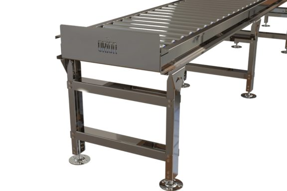
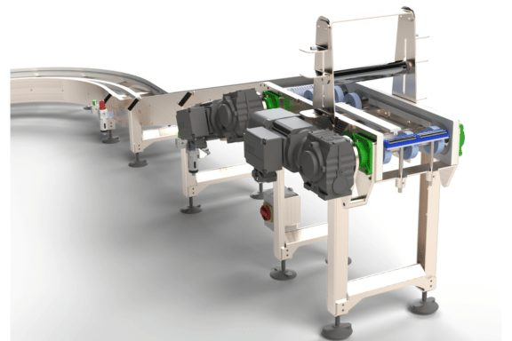

Orion MIS designs, builds and installs UK-made food-grade conveyor and end-of-line automation for food and beverage manufacturers — stainless steel, washdown-ready and modular plastic belt conveyors, robotic palletising and controls — engineered for continuous 24/7 production and proven on Tate & Lyle's sugar lines, with monthly finance available across the range.
Built around hygiene compliance and production-line efficiency, installed into live production environments — mechanical, electrical, controls and support from one UK facility.
Finance subject to specification & approval
Food and beverage production lines carry constraints most warehouses never see: direct food contact, washdown regimes, compliance audits — and production schedules that leave no window for downtime.

Hygienic stainless steel roller conveyor for food production environments. 24 V DC and 48 V DC motor drive systems with customisable roller pitch. Cross transfer and swivel wheel transfer modules available.
See food & beverage range →
Plastic modular belt conveyor designed for direct food contact and washdown environments. 24 V DC, 48 V DC and 3-phase drive options. Customisable modular belt construction for product retention and easy section replacement — up to 2 m/s and 25 kg/m.
See food-grade conveyors →Robotic palletising cells combined with conveyor and transfer infrastructure as one connected system — taking manual handling off the end of the line and freeing operators for higher-value work. Cleated incline and decline conveyors cover level changes.
See robotics & palletising →From a food-grade sugar line running around the clock to a fully automated end-of-line palletising system in high-volume manufacturing.
Bespoke food-grade conveyor system engineered for continuous 24/7 operation in a live production environment, with zero permitted downtime. Designed, built and installed by Orion around Tate & Lyle's production schedule — hygiene compliance and uptime engineered in from the start, not added afterwards.
For Denso — one of the world's largest automotive suppliers — Orion delivered a complete end-of-line system: conveyors, a transfer station and a dual-robot palletising cell working as one continuous line. Product runs from the end of production to finished pallet without a hand touching it, freeing four operators for higher-value work. The same end-of-line architecture applies directly to food and beverage production.
Food-grade conveyor lines, robotic palletising and controls can all be structured around a monthly finance route, subject to specification and approval — with entry systems typically from £4,000/month on a 60-month term. That puts the automation cost next to the manual handling cost it replaces: labour on the line, overtime, agency cover and management time. Saving, payback and the five-year position fall out of the same model.
The questions production and engineering managers actually ask.
Yes. Unit handling, pallet handling and food-grade conveyor lines can all be structured around a monthly finance route, subject to specification and approval — allowing you to spread the cost and compare monthly payments against operational savings. See conveyor system finance for the detail.
Smaller conveyor packages can be on site in 6–10 weeks. Larger turnkey projects typically run 12–25 weeks from order to live. Detailed timelines are confirmed in the Functional Design Specification stage.
ISO 9001:2015 certified, Avetta verified, EcoVadis rated. All systems are designed to UKCA and CE marking with conformity assessment to ISO 12100, ISO 13849, EN 619, BS 7671 and the Supply of Machinery (Safety) Regulations 2008. Full Statement of Manufacture and Declaration of Incorporation issued on completion.
Yes. Most projects involve extending, retrofitting or integrating with legacy conveyor, sortation, scanners or controls. We survey the existing kit first and design around it — rather than ripping out what is already working.
Tell us your washdown spec, product profile and compliance requirement — we'll size the line. Or book a call and talk it through with an engineer first.
Finance options available subject to specification and approval. Orion does not promise guaranteed approval — we help build the technical and commercial case alongside the lender.